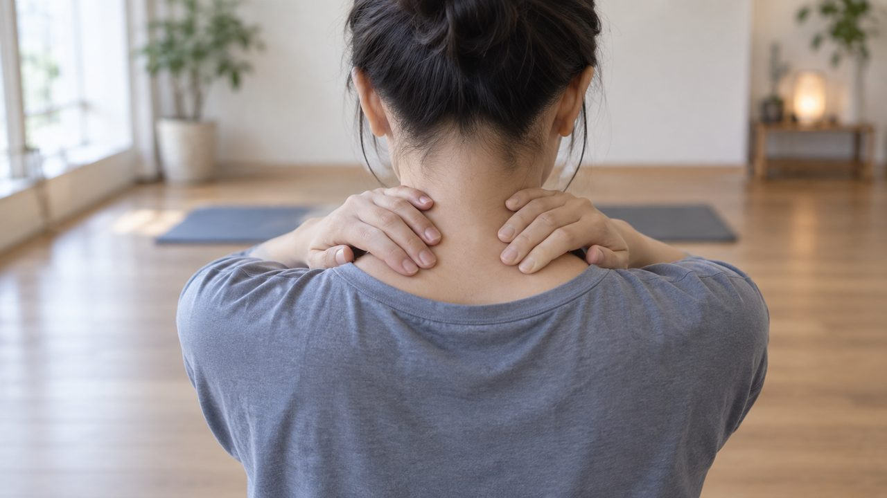
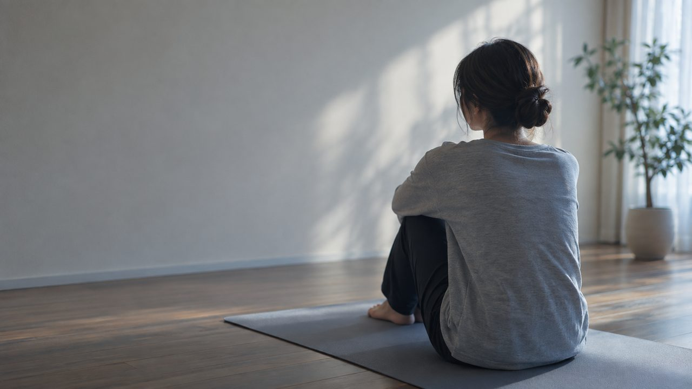
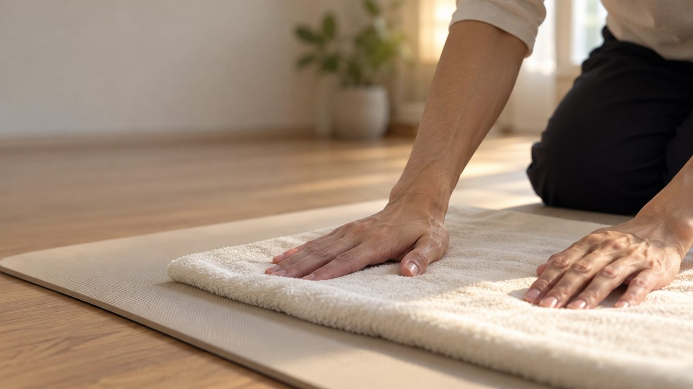
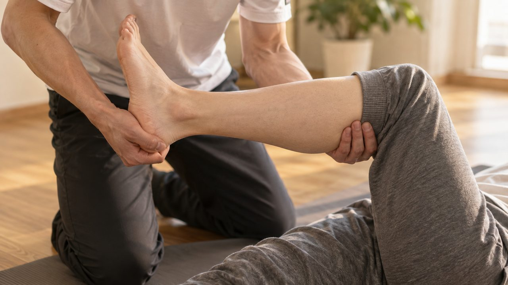
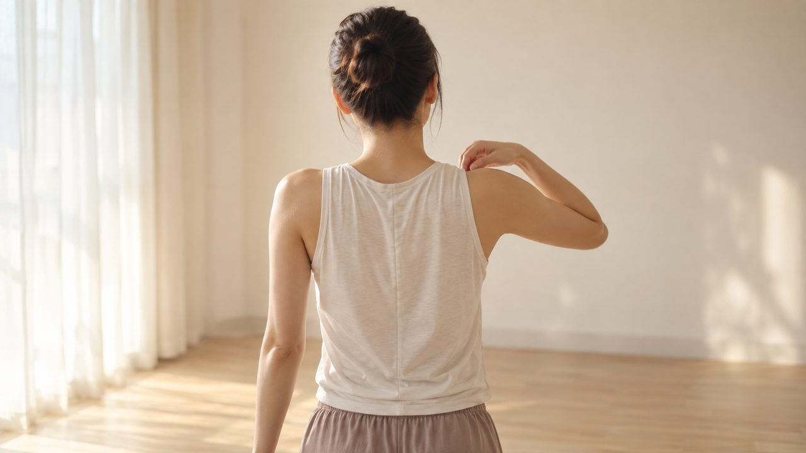
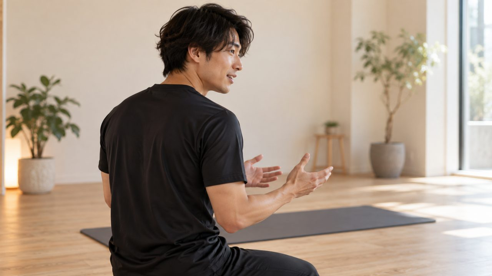
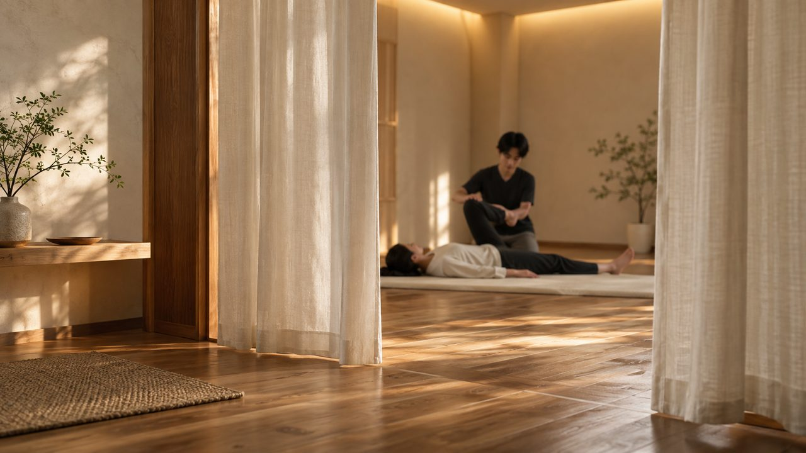
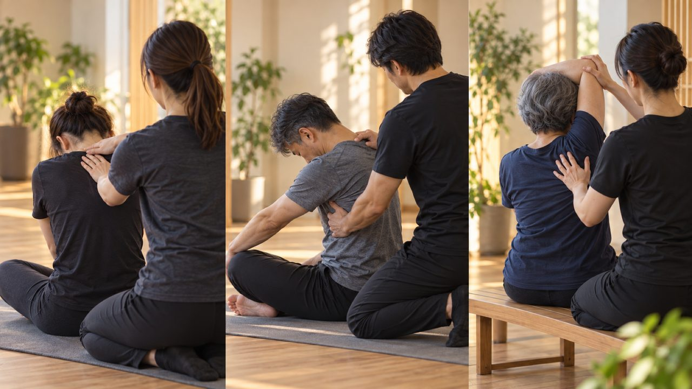
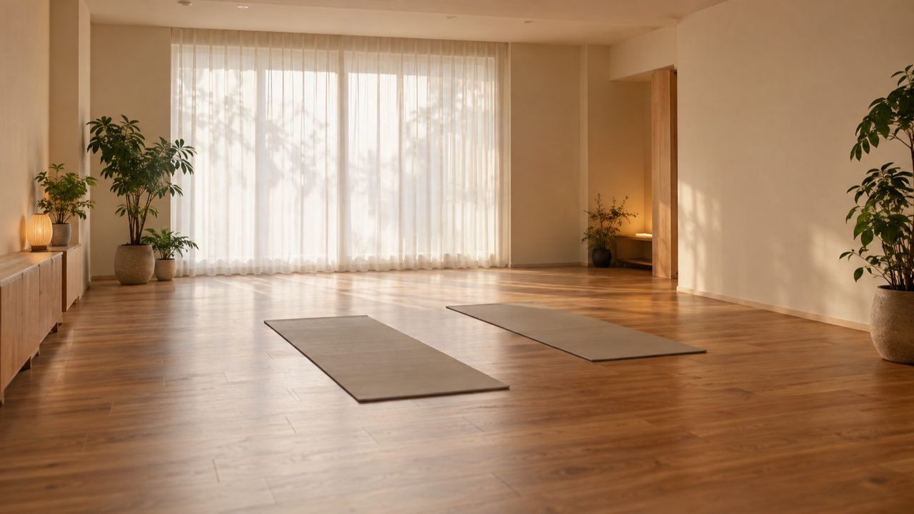
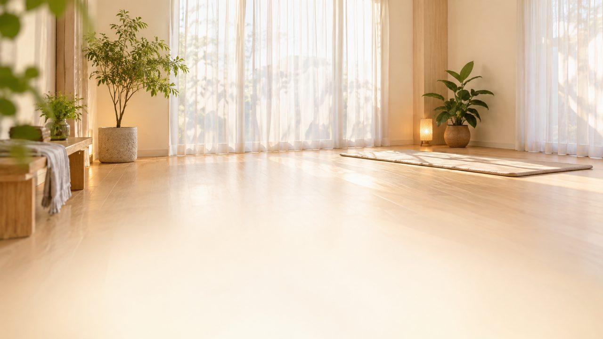

S010:00-0:03首・肩に手を当てる人物の後ろ姿
ナレ
首、肩、腰……その痛み、マシンなしで良くなるの？
パーソナルストレッチジム／熊本県八代市本町1丁目6-23 DUCKWALK 2F
Lovartでの動画化・費用発生は9/30の確定後に行います。今回はまず「どんな絵のトーンで、どんな流れになるか」を 静止画でご確認いただくためのモックアップです。
代表（木戸様）のご出演可否が未確定のため、人物カットはすべて後ろ姿・手元・シルエット中心で仮置きしています。 ビルオーナー所有物・建物の映り込みを気にされていた点についても、店内カット(S09)を含めすべて完全にAI生成の オリジナル内装とし、実店舗の特定できる要素は一切含めていません。
「マシンなしで本当に良くなるの？」という悩みの直撃から始まり、マシン不使用という差別化ポイントを言葉と画の両方で証明し、 最後にプライベート感・幅広い年代対応を見せてCTAへつなぐ流れです。
画像はGPT Imageで生成した仮の画です。表示されているナレーション・テロップが、現時点での本番文言案です。

S010:00-0:03首・肩に手を当てる人物の後ろ姿
首、肩、腰……その痛み、マシンなしで良くなるの？

S020:03-0:08悩ましげに座る人物のシルエット
マシンは苦手。運動も続かない。そんなあなたへ。
マシンが苦手でも、運動が苦手でも

S030:08-0:13インストラクターが手技の準備をする手元アップ
トレーニングマシーンを、一切使わないパーソナルストレッチ。
〈USP①〉マシン不使用のパーソナルストレッチ

S040:13-0:18ストレッチ施術(脚を伸ばす手技)のクローズアップ
手技だけで、伸ばして整える

S050:18-0:23施術後、肩を回して軽さを感じる仕草
たった10分で、体がふっと軽くなる。
〈体感〉たった10分で軽さを実感

S060:23-0:28代表役インストラクターの後ろ姿・横顔・手元
話しやすくて、元気なトレーナーがそばにいる。
ベストキッド 代表 木戸

S070:28-0:33個室風の落ち着いたスペースで施術する引きの画
完全プライベートだから、まわりを気にせず通える。
〈USP②〉一対一のプライベート空間

S080:33-0:38異なる年代・性別の人物が並ぶ／入れ替わるカット
10代から、シニアまで。誰でも、はじめられる。
幅広い年代の男女に対応

S090:38-0:41落ち着いた店内の雰囲気カット(完全AI生成の内装)

S100:41-0:45明るい室内→ロゴ＋連絡先テロップ
ベストキッド — マシンいらずのパーソナルストレッチ。
ベストキッド／熊本県八代市本町1丁目6-23 DUCKWALK 2F／080-3956-0248／Instagram QR
代表（木戸様）のご出演可否・モデルの要否・店内撮影素材の使い方はディレクションMTG（9/30）で確定するため、 今回は受注シート・ヒアリング内容・参考動画リサーチだけをもとに、全カットAI生成で構成しました。
ビルオーナー所有物・建物外観の映り込みを懸念されていた点についても、実写撮影に頼らずAI生成のみで 完結できる作り方があることをこのモックアップでご確認いただけます。
登場人物（インストラクター役・クライアント役）は、実在の人物やタレントを模したものではなく、 AIが独自に生成した架空の人物です（代表ご本人のお写真は使用していません）。
業態が近い実在の広告動画を参考に、トーン・構成を組んでいます（詳細は参考動画リサーチ_20260927.md参照）。
Dr.stretch公式
マシンを使わない手技のみの施術を、画としてどう見せるかの参考にしました。
youtube.com/watch?v=8OwYAfUHqls
Dr.stretch公式
特定の悩みからストレッチでの解決へ一直線に進む構成の参考にしました。
youtube.com/watch?v=uX-PMkC1IJM
ゲンキープ
マシンを使うストレッチの対照事例として、差別化ポイントの言語化材料にしました。
youtube.com/watch?v=geCZ2uAEoBY